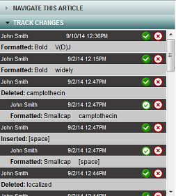
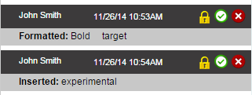

In Review modeIn this mode you can review and accept or reject any edits made to an article., you can see all changes made to your article. You can individually accept or reject each change that your colleagues made. Alternatively, in Editor modeIn this mode you can make edits, work with comments, and perform other tasks. you can click Accept Edits to accept all the changes to the article. Your own changes are accepted by default. Once changes are accepted, you can still go back to Review mode to reject them individually.
The Track Changes panel lists each change.

Click an item in the list. ArticleExpress highlights the change and draws a line from the Track Changes panel to the change in the text.
Click one of two buttons—Accept or Reject .
| Button | Status |
|---|---|
| Change Accepted | |
| Change Rejected |
You can change an accepted change to a rejected change or vice versa. Your choices don't take effect until you Save the article.
Note: In the Track Changes widget, a lock icon next to an edit indicates that the change is linked to another edit. To change the status of a locked edit, you must first change the status of the related edit.
If you see the lock icon next to a change, the accept or reject status to that change is linked to status of the surrounding change.

usingtrackchanges.htm | Copyright © 2015 Dartmouth Journal Services All Rights Reserved.
{kind=link}